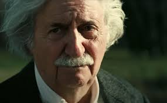
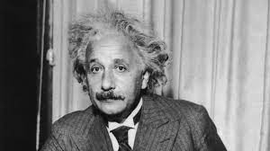
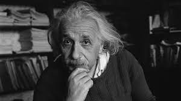

Image Collection

>
 >
>
 >
>

Albert Einstein was a renowned physicist known for his theory of relativity. He made significant contributions to the field of science and is considered one of the most brilliant minds in history.
Learn more on Wikipedia
In his free time, Albert Einstein enjoyed various hobbies, including playing the violin, sailing, traveling, reading, writing, hiking and nature, social and political activism, and playing games like chess.
Einstein and the Violin
Albert Einstein's love for the violin was more than just a casual interest; it was a passion that spanned his entire life. He began playing the violin at a young age, and music quickly became an essential part of his daily routine. Here are some additional details about Einstein's relationship with the violin:
Early Musical Education: Einstein's mother, Pauline Einstein, was an accomplished pianist, and she introduced him to the world of music. He received his first violin lessons from a local teacher in Munich, Germany, where he grew up.
Musical Talent: Einstein displayed a natural talent for the violin. He had a remarkable ear for music and could easily memorize complex compositions.
Practice Routine: his busy schedule as a scientist, Einstein made time for regular violin practice. He often said that playing the violin provided him with solace and relaxation, offering a welcome break from his intense scientific work.
Chamber Music: Einstein enjoyed playing chamber music with friends and colleagues. He was known to participate in impromptu chamber music sessions, playing alongside other musicians.
Einstein and Sailing
Sailing was another of Albert Einstein's cherished pastimes. It allowed him to connect with nature and find tranquility on the open water. Here are some details about Einstein's love for sailing:
Early Interest: Einstein's fascination with sailing began during his time in Zurich, Switzerland. He learned to sail on Lake Zurich and found solace in the peacefulness of the water.
Sailing Adventures: Throughout his life, Einstein enjoyed sailing on various bodies of water, including lakes and rivers. These sailing adventures provided him with relaxation and inspiration for his scientific work.
Connection to Nature: Einstein often spoke of the deep connection he felt with nature while sailing. He appreciated the serenity and the opportunity to escape from the pressures of his academic and scientific responsibilities.
Reflection and Contemplation: Sailing allowed Einstein to reflect on complex scientific problems and find clarity in his thoughts. He valued the moments of solitude and contemplation that sailing offered.
Einstein and Traveling
Traveling was one of Albert Einstein's favorite ways to explore the world and gain new perspectives. He had a deep curiosity about different cultures and places. Here are some details about Einstein's love for traveling:
Wanderlust: Einstein had a strong wanderlust and often embarked on journeys to various countries. He believed that travel broadened his horizons and exposed him to different ways of thinking.
Scientific Expeditions: Einstein participated in scientific expeditions and conferences around the world. His travels were not limited to leisure; he used them to collaborate with other scientists and advance his theories.
Cultural Exploration: Einstein enjoyed immersing himself in different cultures, trying local foods, and interacting with people from diverse backgrounds. He saw cultural exploration as a valuable source of knowledge.
Nature and Beauty: While traveling, Einstein often marveled at the natural beauty of the world. He had a deep appreciation for landscapes, mountains, and serene places.
>
>
Join me in this journey through the cosmos and the wonders of space-time.
Imagination is more important than knowledge. Find out why in this article.
Explore Einstein's groundbreaking theory of relativity and its profound implications for our understanding of space, time, and gravity
He helped invent the concept, but struggled until his death with the idea of a probabilistic universe.